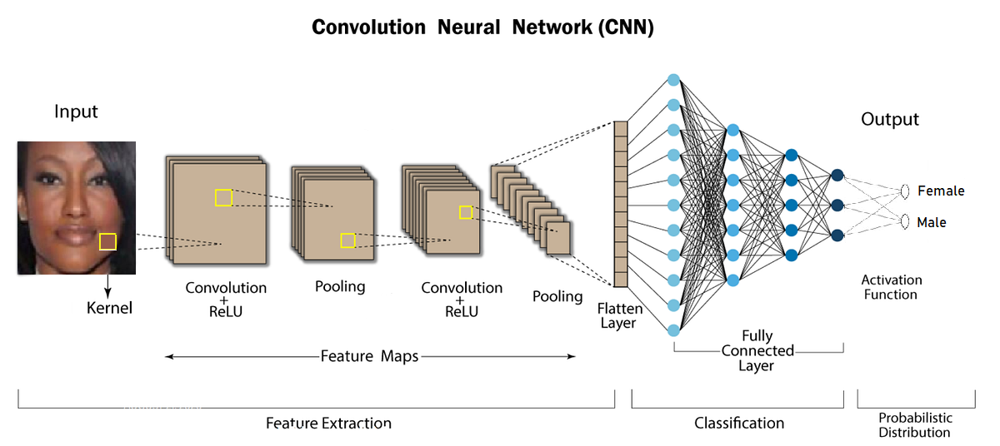

BuyHere Aplicação Web de E-commerce
JavaScript | React.js | Express.js | Node.js | MongoDB | JWT | Redux | RESTful APIs | PayPal REST API | Cloudinary | Tailwind CSS | Lucide | ShadCN UI | Jest | Postman | Render

BuyHere é uma aplicação web full-stack de e-commerce baseado em MERN que permite aos usuários autenticar, navegar por produtos, fazer compras, visualizar o histórico de pedidos e avaliar produtos, enquanto permite que os administradores gerenciem o estoque e o processamento de pedidos.
Desenvolvido utilizando as seguintes tecnologias: Stack: MERN; Frontend: JavaScript, React.js, Redux, Lucide, ShadCN UI; Backend: JavaScript, Express.js, Node.js, JSON Web Token (JWT), RESTful APIs; Base de Dados (Nuvem): MongoDB Atlas (NoSQL); Método de Pagamento: PayPal REST API; Testes e Depuração: Jest, Postman; Provedor de Hospedagem em Nuvem de Imagens: Cloudinary; Provedor de Hospedagem em Nuvem da Aplicação Web: Render.
Sleepify Aplicação Web de Reserva de Hotéis
Python | Django | JavaScript | jQuery | AJAX | HTML | CSS | Bootstrap | PostgreSQL | JWT | RESTful APIs | Stripe API | PayPal REST API | Jazzmin | Pytest | Postman | Render
Sleepify é uma aplicação web full-stack baseado em Django para reservas de hotéis que permite aos usuários autenticar, navegar por hotéis, reservar quartos, gerer seus perfis e avaliar hotéis, enquanto permite que os administradores gerenciem hotéis, quartos e reservas.
Desenvolvido usando as seguintes tecnologias: Stack: Python (Django), PostgreSQL; Frontend: Django, JavaScript, jQuery, AJAX, HTML, CSS, Bootstrap, Jazzmin; Backend: Python, Django, JSON Web Token (JWT), RESTful APIs; Base de Dados (Nuvem): PostgreSQL; Método de Pagamento: Stripe API, PayPal REST API; Testes e Depuração: Pytest, Postman; Provedor de Hospedagem em Nuvem de Base de Dados e Imagens: Render; Provedor de Hospedagem em Nuvem da Aplicação Web: Render.
Aplicação Web de Gestão de Tarefas
Java | Spring Boot | TypeScript | React | PostgreSQL | Docker | JPA | Hibernate | JDBC | Maven | Apache Tomcat | JWT | Tailwind CSS | REST APIs | OOP | MVC | JUnit | Postman | Flyway | Supabase | Hostinger | Render

O Gestor de Tarefas é uma aplicação web full-stack baseado em Java que permite aos usuários autenticar e gerer tarefas em um ambiente seguro e amigável.
Desenvolvido usando as seguintes tecnologias: Stack: Java (Spring Boot), TypeScript (React), SQL, Docker; Frontend: React, TypeScript, Tailwind CSS; Backend: Java, Spring Boot, Spring MVC, Spring Security, Hibernate, JPA, JDBC, JSON, JWT, Maven, Beans, Tomcat, REST APIs, OOP, MVC; Base de Dados (Nuvem): PostgreSQL, Supabase, Flyway; Testes e Depuração: JUnit, Postman; DevOps & Hospedagem: Docker, Render, Hostinger.
Aplicação Web de Suíte de Ferramentas de IA
Python | Gemini API | IA Multimodal | LLMs | PNL | RAG | Base de Dados Vectorial | Embeddings | Chroma | LangChain | Streamlit Cloud

O Aplicação Web de Suíte de Ferramentas de IA é uma plataforma baseada em inteligência artificial que permite aos usuários interagir com um assistente de IA conversacional, gerar posts de blog e fazer upload e analisar documentos (PDF, CSV) e URLs.
Desenvolvido usando as seguintes tecnologias: Frontend: Streamlit (Python); Backend: Python; IA/ML: Gemini API, LLMs, PNL, IA Multimodal, LangChain, RAG, Embeddings; Bases de Dados Vectorial: Chroma; Hospedagem em Nuvem: Streamlit Cloud.
Detecção de Fraude em Pagamentos Bancários
Python | Dash | Flask | Machine Learning | XGBoost | Random Forest | KNN | Scikit-Learn | Pandas | NumPy | Plotly | Dash Bootstrap Components
Desenvolvi modelos de machine learning para identificar transações bancárias fraudulentas utilizando o dataset Banksim, com quase 600 mil registros de operações financeiras simuladas.
O projecto envolveu técnicas de balanceamento de dados (SMOTE), análise exploratória e construção de modelos predictivos como KNN, Random Forest e XGBoost. O modelo XGBoost destacou-se com uma acurácia de 99,15%, precisão, recall e F1-Score de 0,99, além de ROC-AUC de 0,99.
O produto final é uma aplicação web em Python com Dash (Flask), mostrando análise exploratória, desempenho dos modelos, matrizes de confusão, curvas ROC e gráficos de importância de variáveis. Este dashboard fornece insights acionáveis para analistas de fraude e equipes de risco.
Previsão de Incumprimento de Empréstimos Bancários
Python | Dash | Flask | Machine Learning | Random Forest | Gradient Boosting | Decision Tree | SVM | Regressão Logística | Scikit-Learn | Pandas | NumPy | Plotly | Dash Bootstrap Components
Desenvolvi modelos de machine learning e técnicas de análise de dados para prever a probabilidade de incumprimento de empréstimos em clientes bancários, utilizando um dataset histórico composto por informações de clientes, contas, transações e empréstimos.
O projecto envolveu preparação de dados complexos, engenharia de recursos e avaliação de múltiplos modelos, incluindo Random Forest, Decision Tree, Gradient Boosting, SVM e Regressão Logística. Modelos de ensemble como Random Forest e Gradient Boosting alcançaram resultados excepcionais, com 100% de precisão, recall, F1-Score e Acurácia.
A aplicação web final, construída com Python e Dash (Flask), apresenta análise exploratória, desempenho detalhado dos modelos, matrizes de confusão, curvas ROC e gráficos de importância de variáveis, fornecendo insights acionáveis para gerentes de banco, analistas de risco e equipes de atendimento ao cliente.
Previsão de Churn de Clientes de Operadora de Telecomunicações
Python | Dash | Flask | Machine Learning | LightGBM | Random Forest | Gradient Boosting | Scikit-Learn | Pandas | NumPy | Plotly | Dash Bootstrap Components

Desenvolvi modelos de machine learning para prever a rotatividade de clientes em uma operadora de telecomunicações, utilizando um dataset histórico com mais de 3.000 registros, contendo informações demográficas, planos contratados, comportamento de uso e pagamentos.
O projecto envolveu limpeza e preparação de dados, engenharia de recursos e avaliação de múltiplos modelos preditivos. O modelo LightGBM se destacou, alcançando um F1-Score de 0.88 e uma AUC próxima de 0.95, permitindo identificar clientes com alto risco de churn de forma confiável.
O produto final é uma aplicação web em Python com Dash (Flask), apresentando análise exploratória, métricas de desempenho do modelo, matrizes de confusão, curvas ROC e gráficos de importância de variáveis. A ferramenta fornece insights acionáveis para equipes de marketing, retenção de clientes e gerentes de produto, ajudando a implementar estratégias proactivas para reduzir o churn.
Análise de Dados de Produção de Campo de Petróleo
Python | Flask | Dash | Análise de Dados | Análise Exploratória de Dados (EDA) | Pandas | Matplotlib | Seaborn | Plotly | Openpyxl | Jupyter Notebooks

Realizei uma análise de dados de produção de poços de petróleo do Campo da empresa Volve utilizando um dataset de 15.000 registos. O objectivo foi obter insights sobre o desempenho dos poços produtores e auxiliar a gestão de petróleo na tomada de decisões.
A análise identificou os poços mais produtivos (5599 e 5351) e aqueles que se aproximam do fim de sua vida econômica devido à alta produção de água, resultando em recomendações acionáveis para optimizar a alocação de recursos e as decisões operacionais.
Desenvolvido usando Python usando bibliotecas como Pandas, Matplotlib, Seaborn e Plotly.
Previsão de Preços do Gás Natural com Machine Learning
Python | Flask | Dash | Machine Learning | Análise de Séries Temporais | ARIMA | LSTM | TensorFlow | Pandas | Matplotlib | Scikit-Learn | Plotly | Jupyter Notebooks
Desenvolvi modelos de machine learning e análise de dados para prever os preços do gás natural, utilizando um dataset de mais de 6.000 registos de dados históricos de janeiro de 1997 a março de 2022, abrangindo um período de 25 anos.
O trabalho envolveu criação e avaliação de modelos de séries temporais como o ARIMA e o LSTM. O modelo LSTM demonstrou um desempenho preditivo superior, alcançando um R² de 0.787 e um Erro Quadrático Médio de 0.526 na previsão de preço de um período de 18 dias. Esta solução é uma ferramenta valiosa para a análise do mercado de energia.
Desenvolvido usando Python e bibliotecas essenciais como Pandas, NumPy, Matplotlib, TensorFlow, Plotly Express e Statsmodels.
Reconhecimento de Gênero em Imagens Faciais com Deep Learning
Python | Machine Learning | Redes Neurais Convolucionais | Classificação | Keras | Tensorflow | Numpy | Pandas | Matplotlib | Seaborn | Jupyter Notebooks

Este projecto foi apresentado no Governo de Kansas, EUA em 2024, recebendo um prestigioso reconhecimento do estado de Kansas, do Governador de Kansas e de formuladores de políticas por sua contribuição para a pesquisa e inovação no estado de Kansas, EUA.
Desenvolvi uma rede neural convolucional para classificar o gênero de uma pessoa a partir de imagens faciais, alcançando 91% de precisão de validação usando um dataset de mais de 23.000 imagens.
Aplicações potenciais incluem análise demográfica, publicidade direcionada, melhorias de segurança, experiências de usuário personalizadas e diagnósticos médicos.
Criptografia AES e RSA
Python | Streamlit Cloud | Visual Studio Code

Esta aplicação baseado em Python que criptografa e descriptografa mensagens, suportando as cifras AES e RSA.
Desenvolvi os algoritmos de criptografia e descriptografia do zero, criando um sistema que mostra cada etapa do processo AES, incluindo a chave inicial, chaves de rodada e texto cifrado para cada bloco de 16 bytes.
A cifra AES usa um tamanho de chave de 256 bits, e a cifra RSA pode gerar pares de chaves públicas (n, e) e pares de chaves privadas (n, d) com 80 ou 128 bits.
Projecto e Implementação de Redes
Roteadores e Switches Cisco | PuTTY | Microsoft Visio

Projectei e implementei um projecto de rede para uma empresa.
Equipamentos: Roteadores e switches Cisco, servidores e computadores.
Configurei os seguintes serviços em roteadores e switches Cisco: VPN GRE, OSPF, nomes de host, senha criptografada, interfaces, taxa de clock, login, spanning tree, VLANs, ACL, Túnel GRE, NAT, DNS, PPPoE e ISP2.
Administração de Sistemas usando Linux
Linux (Red Hat Enterprise Server, CentOS, Ubuntu) | Windows | VMware Workstation

Configurei e administrei serviços de servidor e rede em Red Hat Enterprise Linux para uma empresa, adaptada ao seu volume de negócios.
Configurei IP, DHCP, DNS, HTTP, FTP, NIS, NFSv4, YUM, Samba, OpenLDAP, configurações LVM (PV, VG, LV), memórias SWAP em dois servidores Red Hat Enterprise Linux e configurei o DHCP em clientes CentOS Linux.
Aumentei a segurança restringindo o acesso ao servidor a contas de administrador, protegendo pastas de departamento e usando NFS para compartilhar directórios entre servidores e clientes.